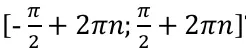
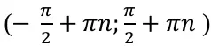
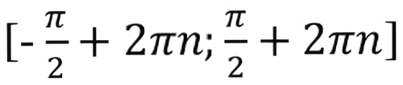
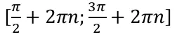
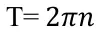
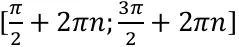
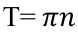
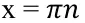
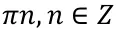
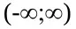

- Номер варианта определяется по последней цифре номера в списке группы.
- Студенты в списке группы с 1 по 10 - выполняют билеты 1 - 10
- Студенты в списке с 11 по 20 - для выбора билета используют вторую цифру.
Пример: Студент под номер 14 - использует вариант № 4, а студент под номером 17 - вариант № 7 - Для студентов чьи номера в списке наичанаются после 30 - ситуация аналогична.
Пример: Студент под номер 31 - использует вариант № 1, а студент под номером 33 - вариант № 3
Задание 1
sin(x + y) = sin x cos y + cos x sin y
sin(x - y) = sin x cos y - cos x sin y
sin(x + y) = sin x cos y - cos x sin y
sin(x - y) = sin x cos y + cos x sin y
tg(x - y) =
tg x + tg y
1 - tg x tg y
tg(x - y) =
tg x - tg y
1 + tg x tg y
ctg(x + y) =
ctg x ctg y - 1
ctg x + ctg y
ctg(x - y) =
ctg x ctg y + 1
ctg x - ctg y
Задание 2
- (1 - sin(-a)) (1 - sin a)
- tg(-a) ctga + sin 2(-a)
- cos(-a) + cos a tg 2(-a)
-
1 + sin(-a)
cos(-a) - tg(-a)
-
cos 2(-a)-cos 4(-a)
sin 2(-a)
- (1 - cos(-a))(1+cos(-a))
- tg a ctg(-a)+cos 2(-a)
- sin(-a)-sin a ctg 2(-a)
-
1+cos(-a)
sin(-a)-ctg(-a)
-
sin 2(-a)-sin 4(-a)
cos 2 (-a)
Варианты ответов:
-
sin 2 a
-
cos 2 a
-
-sin 2 a
-
-cos 2 a
-
1
sin a
-
1
cos a
-
1
-sin a
-
1
-cos a
Задание 3
Какая функуция возрастает на промежутке.
- y = sin x
- y = cos x
- y = tg x
- y = ctg x
Выберите функцию, которая монотонно убывает на всей области определения.
- y = sin x
- y = cos x
- y = tg x
- y = ctg x
Область определения какой функции
- y = sin x
- y = cos x
- y = tg x
- y = ctg x
Наибольшее значение функции равно 1. Для каких функций это утверждение верно.
- y = cos x и y = ctg x
- y = sin x и y = cos x
- y = tg x и y = cos x
- y = tg x и y = ctg x
Функция положительна на промежутке.
- y = sin x
- y = cos x
- y = tg x
- y = ctg x
Область определения функции - множетво всех действительных чисел, кроме чисел:
Для какой функции это утверждение верно?
- y = sin x
- y = cos x
- y = tg x
- y = ctg x
Какие утверждения верны для функции y = sin x
-
Область значений

- Функция убывает на промежутке 
- Функция чётная
- Период функции 
Какие утверждения верны для функции y = cos x
- Функция убывает на промежутке 
- Период функции 
- Функция чётная
- Область значений [ -1;1 ]
Какие утверждения верны для функции y = tg x
- наименьшее значение функции равно -1
- Функция монотонно убывает
- Функция равна 0 при 
- График симметричен относительно начала координат.
Какие утверждения верны для функции y = сtg x
- Область определения - множество всех действительных чисел, проме чисел 
- Функция монотонно убывает
- Функция чётная
- Область значений 